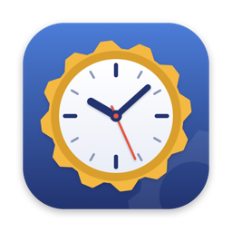
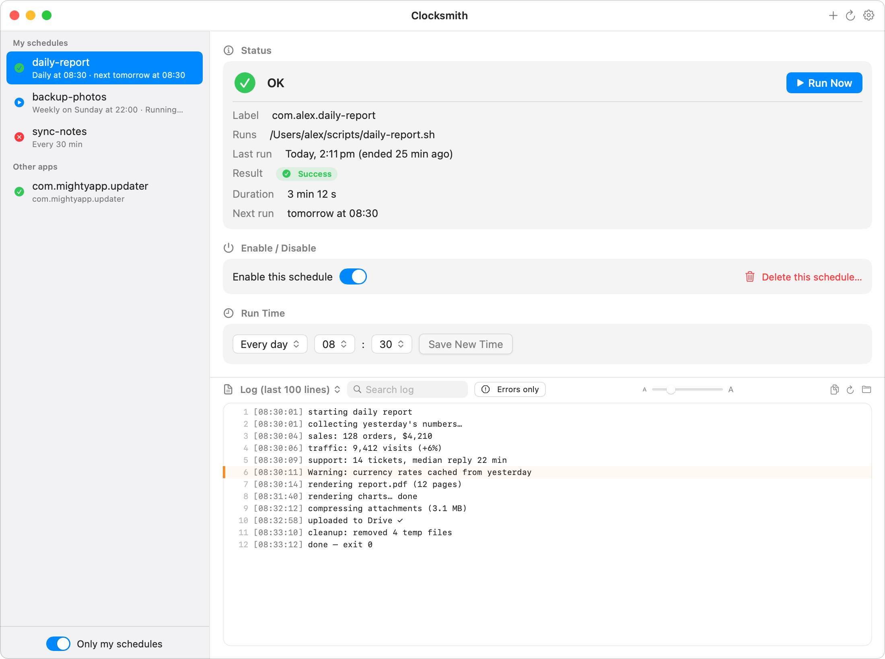
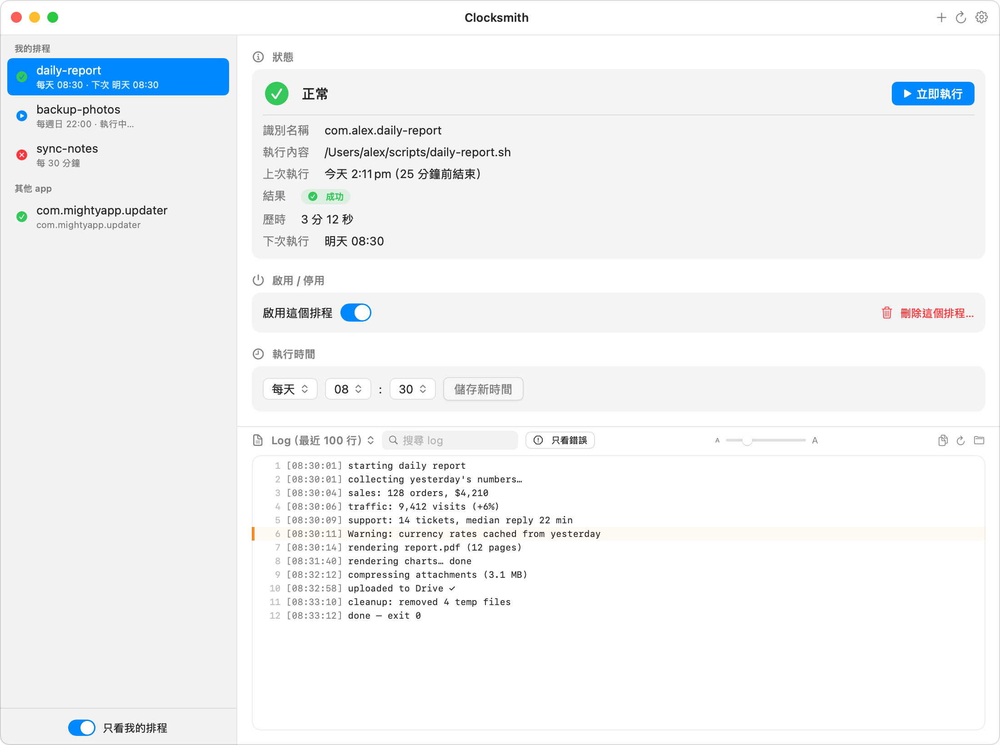

ClocksmithScripts, backups, AI agents, reports — anything scheduled on your Mac with launchd. Clocksmith shows when each job last ran, whether it succeeded, and lets you run, pause, or reschedule it. No Terminal required.
腳本、備份、AI 自動任務、每日報表——只要是 Mac 上排程執行的工作， Clocksmith 都讓你一目了然：上次幾點跑的、成功還是失敗， 還能隨時手動執行、暫停，或直接改時間。全程不用碰終端機。
Buy for $4.99 立即購買 US$4.99 One-time purchase · macOS 14+ · Notarized by Apple 一次買斷・macOS 14 以上・已通過 Apple 公證

Everything in your LaunchAgents — yours and third-party — with live status dots: running, healthy, failed, or disabled.
不管是你自己建的，還是其他軟體偷偷裝的，全部列出來。狀態燈即時更新：執行中、正常、失敗、已停用，一眼分清楚。
Last-run history straight from the system log: start → end time, duration, and exit status. Catch silent failures at a glance.
直接從系統日誌調出執行紀錄：幾點開始、幾點結束、花了多久、有沒有出錯。悄悄失敗的任務再也躲不掉。
Run a job now, toggle it on/off, or change its daily run time — with automatic config backup before every change.
立即執行、一鍵開關、直接調整每天的執行時間——而且每次修改前都會自動備份設定檔，改壞了也救得回來。
Backup → edit → verify → auto-restore on failure. Third-party jobs need explicit confirmation. No data ever leaves your Mac.
每次修改都是「備份 → 寫入 → 驗證」，失敗自動還原。要動到其他軟體的排程會先跟你確認。你的資料完全不會離開你的 Mac。
App Store apps must run in a sandbox that forbids managing launchd jobs — the entire point of Clocksmith. So it's sold directly instead, signed and notarized by Apple like any trustworthy Mac app.
App Store 規定上架的 app 必須關進「沙盒」，而沙盒剛好禁止管理 launchd 排程——這正是 Clocksmith 的核心功能。所以改成官網直售，但一樣經過 Apple 的簽名與公證把關，安全性不打折。
macOS runs background tasks via launchd, configured by plist files in ~/Library/LaunchAgents. Scripts you (or your AI tools) set up to run daily, app updaters, sync helpers — Clocksmith reads and manages the user-level ones.
macOS 內建一套叫 launchd 的排程系統，設定檔放在 ~/Library/LaunchAgents。你（或你的 AI 工具）設定的每日腳本、軟體的自動更新程式、同步小工具，都是靠它在背景執行。Clocksmith 負責幫你看管其中「使用者層級」的排程。
No. Clocksmith has no analytics, no network calls, no account. Everything stays on your Mac.
完全不會。沒有任何追蹤分析、不連網、也不用註冊帳號。所有東西都只留在你的 Mac 上。
It edits simple daily (HH:MM) schedules safely, with automatic backups. Complex configurations (file watchers, multiple times) are shown read-only rather than risk breaking them.
單純「每天幾點幾分」的排程可以放心編輯（改之前會自動備份）。比較複雜的設定——像監看檔案變化、一天跑好幾次——會以唯讀方式顯示，避免不小心改壞。
macOS 14 (Sonoma) or later. Native Swift app, Apple Silicon & Intel.
macOS 14（Sonoma）以上。原生 Swift 開發，Apple Silicon 和 Intel 都支援。